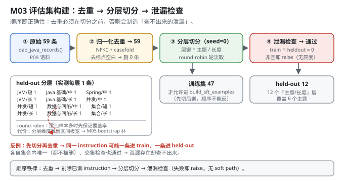
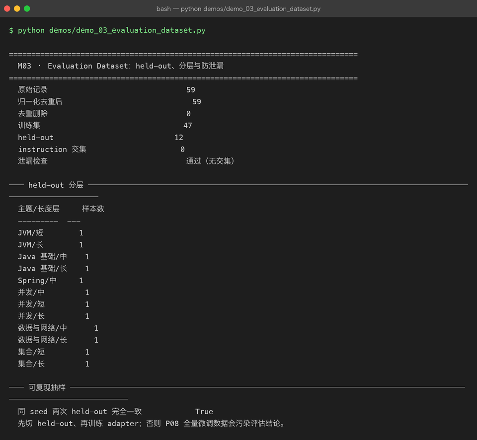

Milestone 03 — Evaluation Dataset：held-out、分层与防泄漏
M02 有了 benchmark，但有个致命问题：它用的 held-out 是哪来的？
P08 M09 报告"域内困惑度 3,649.9 → 421.1（↓88.46%）"时，那个"域内评估集"就是全部 59 条训练语料本身。数字是真的，但它在测"模型有没有背下来"，不是"模型有没有学会"。
这一层把评估集当成一等公民来做：
- 从 59 条原始数据里切出一份从未参与训练的 held-out；
- 切的时候分层，保证主题和长度都覆盖到；
- 切完跑泄漏检查，交集非空就直接
raise。
顺序不能反：先切 held-out，再训练 adapter。P08 的全量微调把 59 条全喂进去了，所以 P09 的所有结论（M01 的 PPL、M05 的配对比较）都必须建立在"重新切分 + 重新训练"之上。
1. Why：为什么"评估集"比"评估指标"更先决定结论可信度
一个评估结论的可信度，取决于最弱的一环。三件事会同时毁掉它：
| 失效模式 | 后果 | 本项目的防线 |
|---|---|---|
| 泄漏：评估题在训练数据里出现过 | 指标虚高，测的是记忆 | leakage_report → 交集非空即抛异常 |
| 偏斜：held-out 全是某一个主题 | 指标只反映该主题 | record_stratum 分层抽样 |
| 不可复现：每次切的不一样 | 两次实验结论不可比 | np.random.default_rng(seed) |
第三条最容易被忽略，但它是"比较"这件事的地基：如果今天的 held-out 和昨天的不一样，M05 里那 10 个 seed 的配对比较就毫无意义。
还有一个顺序问题必须写清楚：去重必须在切分之前。如果先切分再去重，同一条 instruction 可能一条进 train、一条进 held-out —— 去重只能删掉一条，另一条留在 held-out 里，泄漏检查也抓不到（因为归一化后的 key 只出现一次）。
2. Design：四步
build_evaluation_set(records, heldout_size, seed=0, training_records=None)
├── 1. deduplicate_records() NFKC + casefold + 去所有非字母数字 → 按 key 去重
├── 2. 可选：剔除 training_records 里已出现过的 instruction
├── 3. _stratified_pick() 按「主题/长度」分层，round-robin 轮流取
└── 4. leakage_report() train_keys ∩ heldout_keys == ∅ ? 否则 raise几个设计细节：
normalize_instruction（src/ie/evalset.py:19）：unicodedata.normalize("NFKC")统一全角/半角，casefold()统一大小写，re.sub(r"[\W_]+", "")删掉所有标点和空白。"HashMap 怎么扩容？" 和 "hashmap怎么扩容" 必须被判为同一条，否则去重和泄漏检查都是漏的。record_stratum：f"{主题}/{长度}"，主题由infer_topic按关键词推断（并发 / JVM / 集合 / Spring / 数据与网络 / 兜底"Java 基础"），长度按 instruction 字符数 ≤18 短 / ≤30 中 / 否则长。6 个主题 × 3 个长度 = 最多 18 层。_stratified_pick的 round-robin（src/ie/evalset.py:91）：把层名打乱后轮流从每层取一个，取够了就停。保证小层也有样本，而不是按层大小比例抽样（那样小层会被吃掉）。leakage_report失败即RuntimeError（src/ie/evalset.py:145）：不是打一行警告，是直接崩。泄漏是"结论无效"级别的 bug，不值得给它一个 soft path。

3. Real-run evidence（来自 demos/out/demo_03_evaluation_dataset_terminal.txt）
原始语料 59 条（P08 的 load_java_records()），heldout_size=12、seed=0：
原始记录 59
归一化去重后 59
去重删除 0
训练集 47
held-out 12
instruction 交集 0
泄漏检查 通过（无交集）held-out 分层（实测）：
主题/长度层 样本数
--------- ---
JVM/短 1 JVM/长 1
Java 基础/中 1 Java 基础/长 1
Spring/中 1 并发/中 1
并发/短 1 并发/长 1
数据与网络/中 1 数据与网络/长 1
集合/短 1 集合/长 1 同 seed 两次 held-out 完全一致 True五个读数：
- 59 → 59，去重删 0。这一行容易被误读成"去重没用"。真实含义是：这批语料本身没有重复。去重是防御性步骤，本例恰好没触发 —— 见 4.2。
- 训练 47 / held-out 12。切分比例约 20%，是 8~12 条这种小评估集上常见的选择（太小则置信区间太宽，太大则训练数据不够）。M01/M05 用的是
heldout_size=8，M03 演示用 12 —— 同一个函数、只改参数，这是刻意的。 - 12 条 held-out 落在 12 个不同的「主题/长度」层，覆盖全部 6 个主题（JVM / Java 基础 / Spring / 并发 / 数据与网络 / 集合）。每层的样本数都是 1 —— 这正是 round-robin 分层抽样的预期行为：层比样本多时，先保证覆盖率，不保证每层配额。
- instruction 交集 0，泄漏检查通过。这是整章唯一的"硬门槛"，过了才能谈后面的指标。
- 同 seed 两次切分完全一致
True。可复现性实测通过，不是"理论上应该"。

4. 踩坑 / 反直觉发现
4.1 P08 的"域内评估集"其实是训练集 —— 这是本章存在的全部理由
P08 M09 报的"域内困惑度 3,649.9 → 421.1（↓88.46%）"，评估用的是全部 59 条，而这 59 条正是 SFT 的训练数据。
那个数字没有错，但它回答的问题是"模型有没有把这 59 条背下来"，不是"模型有没有学会回答 Java 面试题"。P08 自己也在结论里写了"困惑度下降 ≠ 可用"（定性生成仍是乱码）—— 现在多了一条解释：评估集本身被污染了。
P09 的处理：先切 held-out，再训练 adapter（demos/_common.py:45 的 adapter_bundle，held-out 8 条先切出来，剩下 47 条才进 build_sft_examples）。M01 报的 PPL 5496.76 和 P08 报的 421.1 差了 13 倍 —— 差的不是模型，是评估集。
可迁移的经验：看到"微调后指标暴涨"先问一句：评估集有没有进过训练集。 这是深度学习里最常见、也最容易被漂亮数字掩盖的错误。
4.2 「去重删除 0」不等于"去重这一步可以省"
实测删 0 条，看起来这一步是白写的。但：
- 换一批语料（尤其是爬来的、多人标注的）立刻就会非零；
- 更关键的是 4.3 的顺序问题：去重必须在切分之前，否则会制造"去重后仍然泄漏"的假象。
防御性代码的价值不在本次是否触发，而在换输入时不会静默出错。本项目让它打印 去重删除 0 而不是隐藏这一行，就是为了让"没触发"这件事可见。
4.3 顺序反了会制造"查不出来的泄漏"
假设同一条 instruction 出现两次（key 相同）：
- 正确顺序（先去重再切分）：两条合成一条，要么进 train 要么进 held-out，不会同时出现 → 交集为 0。
- 错误顺序（先切分再去重）：可能一条进 train、一条进 held-out；去重时各自在自己的集合里是唯一的，谁都不会被删；
leakage_report检查的是 train 与 held-out 的交集，此时两者确实不同 → 泄漏检查通过，但实际泄漏了。
所以 build_evaluation_set 的第一步就是 deduplicate_records，training_records 的剔除也在切分之前（src/ie/evalset.py:117-126）。顺序即正确性。
4.4 分层抽样的"每层 1 个"是预期行为，不是抽样坏了
12 条样本落到 12 个不同的层，每层恰好 1 条。这是 _stratified_pick 的 round-robin 设计的直接结果：层名打乱后轮流取，只有在取完一轮后才会回到同一层取第二个。
当 heldout_size 小于层数时（12 < 理论最多 18 层，实际这批数据只有 12 个非空层），结果必然是"每层一个"。这是有意的覆盖优先策略：12 条样本里宁可每个主题都有，也不要某个主题堆 5 条、其他主题 0 条。
代价要说清楚：每层只有 1 条时，分层维度上的置信区间极宽。本项目在 M05 用 10 seed bootstrap 给出 ±0.047 的标准差，正是在补这个洞 —— 分层保证覆盖，bootstrap 量化不确定性，两件事缺一不可。
4.5 泄漏检查用 raise 而不是 warning
if not report["leakage_free"]:
raise RuntimeError(f"评估集泄漏：发现 {report['overlap_count']} 条 instruction 重叠")理由：泄漏后的所有下游数字都是无效的，让流程继续跑下去只是浪费时间和制造误导。相比之下，P08 的"遗忘判定"用 ±10% 容忍度是合理的 —— 那是一个连续量，需要人为设阈值；而"交集是否为空"是一个布尔事实，没有灰度。
5. Conclusion
- 评估集是结论可信度的第一环，比指标本身更先决定成败。三种失效模式：泄漏、偏斜、不可复现。
- 实测：59 条 → 去重后 59（删 0）→ 训练 47 / held-out 12，instruction 交集 0，泄漏检查通过；12 条覆盖全部 6 个主题层。
- 顺序即正确性：先去重 → 再剔除已训 instruction → 再分层切分 → 最后泄漏检查。顺序反了会制造"查不出来的泄漏"。
- 先切 held-out 再训练 adapter。P08 的 421.1 与 P09 的 5496.76 差 13 倍，差的不是模型，是评估集。
- 分层用 round-robin 保证覆盖率：层比样本多时每层 1 条是预期行为；代价是分层维度置信区间极宽，需靠 M05 的 bootstrap 补。
- 泄漏是布尔事实，没有灰度 ——
raise而不是warning。 - 同 seed 两次切分完全一致（实测
True），这是 M05 配对比较的地基。 - 手写实现的意义：因为切分、去重、泄漏检查都是自己的代码，我能精确回答"held-out 里到底有什么"（12 行分层表就是答案）；用
train_test_split只能拿到两个数组。
6. Code map
| 文件 | 职责 |
|---|---|
src/ie/evalset.py | normalize_instruction（NFKC + casefold + 去标点）/ infer_topic / length_stratum / record_stratum（主题/长度层键）/ deduplicate_records / leakage_report（交集检查）/ _stratified_pick（round-robin 分层抽样）/ stratum_counts / build_evaluation_set（四步主流程，泄漏即 raise） |
src/ie/evalset.py:145 | 泄漏检查失败 → RuntimeError，无 soft path |
demos/_common.py | data_split / base_bundle / adapter_bundle：先切 held-out 再训 adapter 的落地处 |
demos/demo_03_evaluation_dataset.py | 3 节：切分统计 / held-out 分层表 / 可复现性验证 |
demos/out/demo_03_evaluation_dataset_terminal.txt | 本章所有数字的来源 |
assets/evalset.svg | 本章 held-out 切分与泄漏检查图 |
7. Version line
v0.2 → v0.3，M03 评估数据集落地。实测：heldout_size=12 / seed=0 → 原始 59 条、去重后 59（删 0）、训练 47 / held-out 12、instruction 交集 0、泄漏检查通过；12 条落在 12 个不同的「主题/长度」层，覆盖全部 6 个主题（JVM / Java 基础 / Spring / 并发 / 数据与网络 / 集合）；同 seed 两次切分完全一致 True。并诚实记录「P08 的域内评估集实为训练集，421.1 vs 5496.76 差 13 倍源于评估集而非模型」「去重删除 0 不代表该步骤可省」「顺序反了会制造查不出的泄漏」。纯 numpy + 标准库。配图 1 张手写 SVG + 1 张真实终端截图。